5. Advanced data structures and frameworks#
Key takeaways
Modern single-cell experiments often measure multiple modalities (e.g., RNA, ATAC, proteins) at the same time. While AnnData is designed for unimodal data, multimodal experiments require containers such as MuData that organize multiple datasets together.
A MuData object stores several AnnData objects (one per modality) while sharing global annotations for cells and features. This structure allows both modality-specific analyses and joint multimodal computations within the same dataset.
The framework muon extends the analysis ecosystem by providing preprocessing and analysis tools for modalities beyond RNA, such as ATAC or protein data. It also includes methods that integrate information across multiple modalities.
Spatial omics technologies measure molecular data while preserving spatial context within tissues. The data structure SpatialData stores images, coordinates, geometries, and molecular measurements in a unified data structure.
Squidpy combines molecular profiles with spatial context, providing tools for both analysis and visualization. Built on Scanpy and AnnData, it retains modularity and scalability.
Environment setup
Install conda:
Before creating the environment, ensure that conda is installed on your system.
Save the yml content:
Copy the content from the yml tab into a file named
environment.yml.
Create the environment:
Open a terminal or command prompt.
Run the following command:
conda env create -f environment.yml
Activate the environment:
After the environment is created, activate it using:
conda activate <environment_name>
Replace
<environment_name>with the name specified in theenvironment.ymlfile. In the yml file it will look like this:name: <environment_name>
Verify the installation:
Check that the environment was created successfully by running:
conda env list
name: advanced_data_structures_and_frameworks
channels:
- conda-forge
- bioconda
dependencies:
- conda-forge::imagecodecs<2026,>=2025.8.2
- conda-forge::muon=0.1.7
- conda-forge::python=3.13.12
- conda-forge::squidpy=1.8.1
- conda-forge::scanpy=1.12
- conda-forge::leidenalg=0.11.0
- conda-forge::python-igraph=1.0.0
- conda-forge::spatialdata=0.7.2
- pip
- pip:
- lamindb
- pysam==0.23.3
Get data and notebooks
This book uses lamindb to store, share, and load datasets and notebooks using the theislab/sc-best-practices instance. We acknowledge free hosting from Lamin Labs.
Install lamindb
Install the lamindb Python package:
pip install lamindb
Optionally create a lamin account
Sign up and log in following the instructions
Verify your setup
Run the
lamin connectcommand:
import lamindb as ln ln.Artifact.connect("theislab/sc-best-practices").df()
You should now see up to 100 of the stored datasets.
Accessing datasets (Artifacts)
Search for the datasets on the Artifacts page
Load an Artifact and the corresponding object:
import lamindb as ln af = ln.Artifact.connect("theislab/sc-best-practices").get(key="key_of_dataset", is_latest=True) obj = af.load()
The object is now accessible in memory and is ready for analysis. Adapt the
ln.Artifact.connect("theislab/sc-best-practices").get("SOMEIDXXXX")suffix to get respective versions.Accessing notebooks (Transforms)
Search for the notebook on the Transforms page
Load the notebook:
lamin load <notebook url>
which will download the notebook to the current working directory. Analogously to
Artifacts, you can adapt the suffix ID to get older versions.

Fig. 5.1 Scverse ecosystem overview highlighting the libraries of this chapter. The publication date by a scientific journal is shown in brackets. We have obtained the symbols of the libraries from the corresponding Github pages [Bredikhin et al., 2022, Marconato et al., 2025, Palla et al., 2022, Virshup et al., 2021, Wolf et al., 2018].#
5.1. Using MuData to store multimodal data#
AnnData is primarily designed for storing and manipulating unimodal data. However, multimodal assays such as CITE-Seq generate multimodal data by simultaneously measuring RNA and surface proteins. This data requires more advanced ways of storing, which is where MuData comes into play. MuData builds on top of AnnData to store and manipulate multimodal data. Muon [Bredikhin et al., 2022], a “Scanpy equivalent” and core package of scverse, can then be used to analyze the multimodal omics data. The following section is based on the MuData Quickstart and the Multimodal data objects tutorial.

Fig. 5.2 MuData overview. Image obtained from [Bredikhin et al., 2022].#
5.1.1. Installation#
MuData is available on PyPI and Conda. It can be installed using either of the following commands.
pip install mudata
conda install -c conda-forge mudata
The main idea behind MuData is that the MuData object contains references to single AnnData objects of the unimodal data, but the MuData object itself also stores multimodal annotations.
It is therefore possible to directly access the AnnData objects to perform unimodal data transformations which store their results in the corresponding AnnData annotations, but also to aggregate the modalities for joint calculations whose results can be stored in the global MuData object.
Technically, this is realized by MuData objects comprising a dictionary with AnnData objects, one per modality, in their .mod (=modality) attribute.
Just as AnnData objects themselves, MuData objects also contain attributes like .obs with annotation of observations (samples or cells), .obsm with their multidimensional annotations such as embeddings.
5.1.2. Initializing a MuData object#
Let’s import MuData from the mudata package.
import lamindb as ln
import mudata as md
import numpy as np
ln.track()
To create an example MuData object we require simulated data. Therefore, we created two AnnData objects with data for the same observations, but for different variables.
adata = ln.Artifact.get(
key="introduction/advanced_data_structures_and_frameworks_mudata_1.h5ad",
).load()
adata
AnnData object with n_obs × n_vars = 1000 × 100
adata2 = ln.Artifact.get(
key="introduction/advanced_data_structures_and_frameworks_mudata_2.h5ad",
).load()
adata2
AnnData object with n_obs × n_vars = 1000 × 50
These two AnnData objects (two “modalities”) can then be wrapped into a single MuData object.
Here, we name modality one A and modality two B.
mdata = md.MuData({"A": adata, "B": adata2})
mdata
MuData object with n_obs × n_vars = 1000 × 150
2 modalities
A: 1000 x 100
B: 1000 x 50Observations and variables of the MuData object are global, which means that observations with the identical name (.obs_names) in different modalities are considered to be the same observation (e.g. obs_1 in adata and obs_1 in adata2).
This also means variable names (.var_names) should be unique (e.g. var_1 in adata and var2_1 in adata2).
This is reflected in the object description above: mdata has 1000 observations and 150 = 100+50 variables.
5.1.3. MuData attributes#
5.1.3.1. .mod#
MuData objects consist of annotations as earlier described for AnnData objects like .obs or .var, but extend this behavior with .mod which serves as an accessor to the individual modalities.
Modalities are stored in a collection accessible via the .mod attribute of the MuData object with names of modalities as keys and AnnData objects as values.
list(mdata.mod.keys())
['A', 'B']
Individual modalities can be accessed with their names via the .mod attribute or via the MuData object itself as a shorthand.
print(mdata.mod["A"])
print(mdata["A"])
AnnData object with n_obs × n_vars = 1000 × 100
AnnData object with n_obs × n_vars = 1000 × 100
5.1.3.2. .obs and .var#
Samples (cells) annotation is accessible via the .obs attribute and by default includes copies of columns from .obs data frames of individual modalities.
The same goes for .var, which contains annotation of variables (features).
Observations columns copied from individual modalities contain modality name as their prefix, e.g. rna:n_genes.
This is also true for variables columns.
However if there are columns with identical names in .var of multiple modalities (e.g., n_cells), these columns are merged across modalities and no prefix is added.
When those slots are changed in AnnData objects of modalities, e.g. new columns are added or samples (cells) are filtered out, the changes have to be fetched with the .update() method (see below).
mdata.var_names
Index(['var_1', 'var_2', 'var_3', 'var_4', 'var_5', 'var_6', 'var_7', 'var_8',
'var_9', 'var_10',
...
'var2_41', 'var2_42', 'var2_43', 'var2_44', 'var2_45', 'var2_46',
'var2_47', 'var2_48', 'var2_49', 'var2_50'],
dtype='object', length=150)
Multidimensional annotations of samples (cells) are accessible in the .obsm attribute.
For instance, that can be UMAP coordinates that were learnt jointly on all modalities.
If the shape of a modality is changed (e.g. change var_names), MuData.update() has to be run to bring the respective updates to the MuData object.
adata2.var_names = ["var_ad2_" + e.split("_")[1] for e in adata2.var_names]
print("Outdated variables names: ...,", ", ".join(mdata.var_names[-3:]))
mdata.update()
print("Updated variables names: ...,", ", ".join(mdata.var_names[-3:]))
Outdated variables names: ..., var2_48, var2_49, var2_50
Updated variables names: ..., var_ad2_48, var_ad2_49, var_ad2_50
Importantly, individual modalities are stored as references to the original objects. Hence, if the original AnnData is changed the change will also be reflected in the MuData object.
# Add some unstructured data to the original object
adata.uns["misc"] = {"adata": True}
# Access modality A via the .mod attribute
mdata.mod["A"].uns["misc"]
{'adata': True}
5.1.4. Variable mappings#
Upon construction of a MuData object, a global binary mapping between observations and individual modalities is created as well as between variables and modalities.
Since all the observations are the same across modalities in mdata, all the values in the observations mappings are set to True.
mdata.obsm["A"]
np.sum(mdata.obsm["A"]) == np.sum(mdata.obsm["B"]) == 1000
np.True_
For variables however, those are 150-long vectors.
The A modality has 100 True values followed by 50 False values.
mdata.varm["A"]
5.1.5. MuData views#
Analogous to the behavior of AnnData objects, slicing MuData objects returns views of the original data.
view = mdata[:100, :1000]
print(view.is_view)
print(view["A"].is_view)
True
True
Subsetting MuData objects is special since it slices them across modalities.
For example, the slicing operation for a set of obs_names and/or var_names will be performed for each modality and not only for the global multimodal annotation.
This behavior makes workflows memory-efficient, which is especially important when working with large datasets.
If the object is to be modified however, a copy of it should be created, which is not a view anymore and has no dependence on the original object.
mdata_sub = view.copy()
mdata_sub.is_view
False
5.1.6. Common observations#
While a MuData object is comprised of the same observations for both modalities, it is not always the case in the real world where some data might be missing.
By design, MuData accounts for these scenarios since there’s no guarantee observations are the same (or even intersecting) for a MuData instance.
It’s worth noting that other tools might provide convenience functions for some common scenarios of dealing with missing data, such as intersect_obs() implemented in muon.
5.1.7. Reading and Writing of MuData objects#
Similarly to AnnData objects, MuData objects were designed to be serialized into HDF5 based .h5mu files.
All modalities are stored under their respective names in the /mod HDF5 group of the .h5mu file. Each individual modality, e.g. /mod/A, is stored in the same way as it would be stored in the .h5ad file.
MuData objects can be read and written as follows:
mdata.write("my_mudata.h5mu")
mdata_r = md.read("my_mudata.h5mu", backed=True)
mdata_r
MuData object with n_obs × n_vars = 1000 × 150 backed at 'my_mudata.h5mu'
2 modalities
A: 1000 x 100
uns: 'misc'
B: 1000 x 50Individual modalities are backed as well inside the .h5mu file.
mdata_r["A"].isbacked
True
If the original object is backed, provide a new filename to the .copy() call, and the resulting object will be backed at a new location.
mdata_sub = mdata_r.copy("mdata_sub.h5mu")
print(mdata_sub.is_view)
print(mdata_sub.isbacked)
False
True
5.1.8. Multimodal methods#
When the MuData object is prepared, it is up to multimodal methods to be used to make sense of the data. The most simple and naive approach is to concatenate matrices from multiple modalities to perform for example dimensionality reduction.
x = np.hstack([mdata.mod["A"].X, mdata.mod["B"].X])
x.shape
(1000, 150)
We can write a simple function to run a principal component analysis (PCA) on such a concatenated matrix.
MuData object provides a place to store multimodal embeddings: MuData .obsm.
It is similar to how the embeddings generated on individual modalities are stored, only this time it is saved inside the MuData object rather than in AnnData .obsm.
To calculate for example a PCA for the joint values of the modalities, we horizontally stack the values stored in the individual modalities and then perform the PCA on the stacked matrix. This is possible because the number of observations matches across modalities (remember, the number of features per modality does not have to match).
def simple_pca(mdata):
from sklearn import decomposition
x = np.hstack([m.X for m in mdata.mod.values()])
pca = decomposition.PCA(n_components=2)
components = pca.fit_transform(x)
# By default, methods operate in-place and embeddings are stored in the .obsm slot
mdata.obsm["X_pca"] = components
simple_pca(mdata)
print(mdata)
MuData object with n_obs × n_vars = 1000 × 150
obsm: 'X_pca'
2 modalities
A: 1000 x 100
uns: 'misc'
B: 1000 x 50
Our calculated principal components are now stored in the MuData object itself and accessible for further multimodal transformations.
In reality, however, having different modalities often means that the features between them come from different generative processes and are not comparable. This is where special multimodal integration methods come into play. For omics technologies, these methods are frequently addressed as multi-omics integration methods. In the following section we will introduce muon which provides many tools to preprocess unimodal data beyond RNA-Seq and multi-omics integration methods.
5.2. Multimodal data analysis with muon#
Although Scanpy provides generally applicable tools such as PCA, UMAP, and various visualizations, it is primarily designed to analyze RNA-Seq data. Muon fills this gap by providing preprocessing functions for other omics, such as chromatin accessibility (ATAC) or protein (CITE) data. As mentioned above, muon further provides algorithms to run multi-omics algorithms that infer knowledge from the joint modalities. For example, users may run a PCA on a single modality, but muon further provides multi-omics factor analysis algorithms that take several modalities as input. The follwing sections was adopted from the muon tutorial “Processing chromatin accessibility of 10k PBMCs”.
{kind=link}
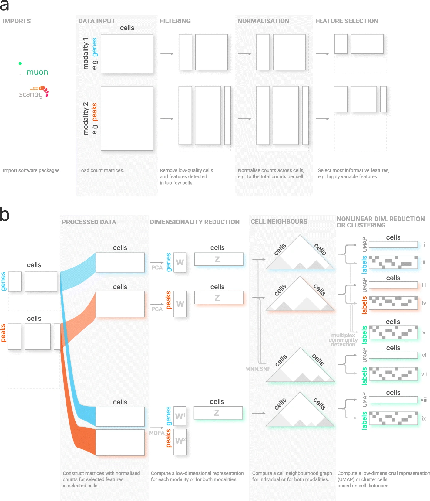
Fig. 5.3 muon overview. Image obtained from [Bredikhin et al., 2022].#
5.2.1. Installation#
Muon is available on PyPI and can be installed using:
pip install muon
5.2.2. API overview#
To introduce muon, we will examine the ATAC data from a multimodal dataset. Analogously to the Scanpy chapter, this chapter solely serves as a quick demo and overview of muon and does not analyze a dataset thoroughly, let alone provide best-practice multi-omics analysis. Please read the corresponding chapters to learn how to properly conduct such analyses.
Muon separates its modules in two ways. First, analogously to Scanpy, general and multimodal functions are grouped in preprocessing (muon.pp), tools (muon.tl) and plots (muon.pl).
Second, unimodal tools are available from the corresponding muon, which are again separated into preprocessing, tools and plots.
For example, all ATAC preprocessing functions are grouped into muon.atac.pp.
This also applies to CITE-Seq preprocessing functions (muon.prot.pp).

Fig. 5.4 Muon API overview. Modality specific functions are provided in correspondingly named modules. Functions for the joint analysis of modalities are available via the muon module directly.#
5.2.3. Muon API demo#
The dataset for our demo is a publicly available 10x Genomics Multiome dataset for human peripheral blood mononuclear cells (PBMCs).
import muon as mu
mdata = ln.Artifact.get(
key="introduction/advanced_data_structures_and_frameworks_muon.h5mu", is_latest=True
).load()
fragments = ln.Artifact.get(
key="introduction/advanced_data_structures_and_frameworks_atac_fragments.tsv.gz",
is_latest=True,
).cache()
fragments_tbi = ln.Artifact.get(
key="introduction/advanced_data_structures_and_frameworks_atac_fragments.tsv.gz.tbi",
is_latest=True,
).cache()
mdata
MuData object with n_obs × n_vars = 11909 × 144978
var: 'gene_ids', 'feature_types', 'genome', 'interval'
2 modalities
rna: 11909 x 36601
var: 'gene_ids', 'feature_types', 'genome', 'interval'
atac: 11909 x 108377
var: 'gene_ids', 'feature_types', 'genome', 'interval'
uns: 'atac', 'files'As a first step we subset to the ATAC modality.
atac = mdata.mod["atac"]
Although, we are now not working with RNA-Seq, it is possible to use some of Scanpy’s preprocessing functions which can also be used on ATAC data. This is possible due to similar distribution and quality issues of both modalities. The only thing to bear in mind here that a gene would mean a peak in the context of the AnnData object with ATAC-seq data. Afterwards, ATAC specific preprocessing can be conducted with the ATAC module of muon.
Let us start with some quality control by filtering out cells with too few peaks and peaks detected in too few cells. For now, we will filter out cells that do not pass QC.
import scanpy as sc
sc.pp.calculate_qc_metrics(atac, percent_top=None, log1p=False, inplace=True)
sc.pl.violin(atac, ["total_counts", "n_genes_by_counts"], jitter=0.4, multi_panel=True)
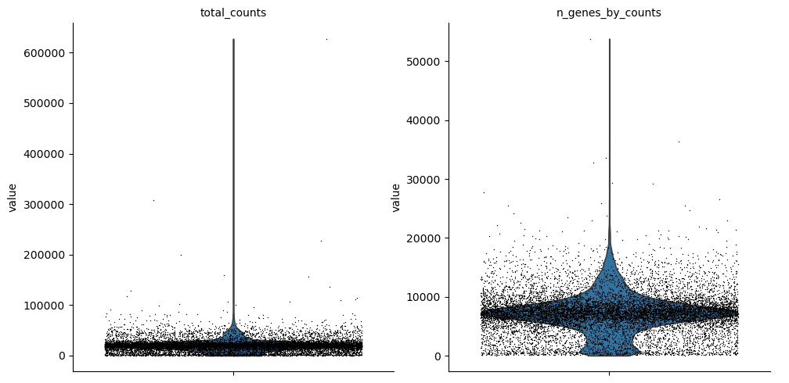
Filter peaks whose expression is not detected.
mu.pp.filter_var(atac, "n_cells_by_counts", lambda x: x >= 10)
# This is analogous to
# sc.pp.filter_genes(rna, min_cells=10)
# but does in-place filtering and avoids copying the object
We also filter the cells.
mu.pp.filter_obs(atac, "n_genes_by_counts", lambda x: (x >= 2000) & (x <= 15000))
# This is analogous to
# sc.pp.filter_cells(atac, max_genes=15000)
# sc.pp.filter_cells(atac, min_genes=2000)
# but does in-place filtering avoiding copying the object
mu.pp.filter_obs(atac, "total_counts", lambda x: (x >= 4000) & (x <= 40000))
sc.pl.violin(atac, ["n_genes_by_counts", "total_counts"], jitter=0.4, multi_panel=True)
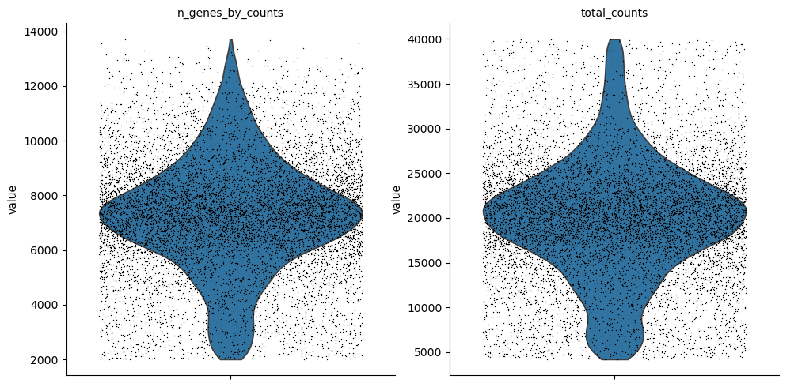
Muon also provides histograms which allows for a different view on the metrics.
mu.pl.histogram(atac, ["n_genes_by_counts", "total_counts"])
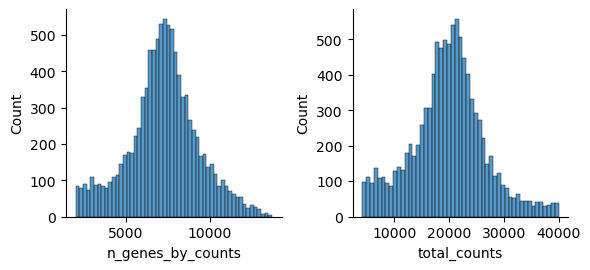
Now that we rudimentary filtered out cells with too few peaks and peaks detected in too few cells, we can start with ATAC specific quality control with muon. Muon has modality specific preprocessing functions in corresponding modules. We import the ATAC module to access the ATAC specific preprocessing functions.
from muon import atac as ac
# Perform rudimentary quality control with muon's ATAC module
atac.obs["NS"] = 1
ac.tl.locate_fragments(mdata, fragments=str(fragments))
ac.tl.locate_fragments(atac, fragments=str(fragments))
ac.tl.nucleosome_signal(atac, n=1e6)
ac.tl.get_gene_annotation_from_rna(mdata["rna"]).head(3)
tss = ac.tl.tss_enrichment(mdata, n_tss=1000)
ac.pl.tss_enrichment(tss)
Reading Fragments: 100%|██████████| 1000000/1000000 [00:03<00:00, 319214.51it/s]
Fetching Regions...: 100%|██████████| 1000/1000 [00:09<00:00, 106.91it/s]
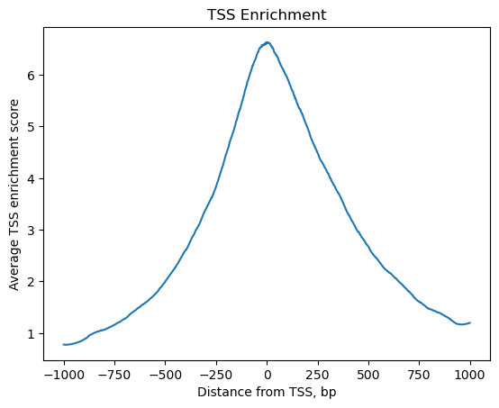
# Save original counts, normalize data and select highly variable genes with scanpy
atac.layers["counts"] = atac.X
sc.pp.normalize_per_cell(atac, counts_per_cell_after=1e4)
sc.pp.log1p(atac)
sc.pp.highly_variable_genes(atac, min_mean=0.05, max_mean=1.5, min_disp=0.5)
atac.raw = atac
Although PCA is also commonly used for ATAC data, latent semantic indexing (LSI) is another popular option. It is implemented in muon’s ATAC module.
ac.tl.lsi(atac)
sc.pp.neighbors(atac, use_rep="X_lsi", n_neighbors=10, n_pcs=30)
sc.tl.leiden(atac, resolution=0.5)
sc.tl.umap(atac, spread=1.5, min_dist=0.5, random_state=20)
sc.pl.umap(atac, color=["leiden", "n_genes_by_counts"], legend_loc="on data")

We can use the functionality of the ATAC module in muon to color plots by cut values in peaks corresponding to a certain gene.
ac.pl.umap(atac, color=["KLF4"], average="peak_type")
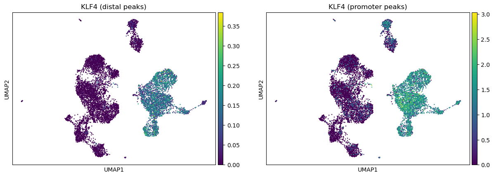
For more details on all available functions of muon, please read the muon API reference and the muon tutorials.
5.3. Using SpatialData to store multimodal and spacial data#
Spatial omics refers to technologies that measure molecular information (gene expression, chromatin accessibility, proteins) while preserving their physical location inside a tissue. Traditional single-cell methods lose spatial context during tissue dissociation, whereas spatial omics retains both molecular profiles and spatial positions of individual cells. Because these datasets combine images, coordinates, and multiple molecular measurements, they are large, complex, and require specialized spatially aware data structures. SpatialData unifies raw and processed data from multiple spatial omics technologies [Marconato et al., 2025]. Its five primitive elements (SpatialElements) are saved in a Zarr store following the OME–NGFF standard, a standardized format for bioimaging data.
5.3.1. Installation and importing#
Again, either use PyPI or Conda to install SpacialData.
pip install spatialdata
conda install -c conda-forge spatialdata
5.3.2. Key terms and data model#
We can think of a SpatialData object as a container for various Elements. An Element is either a SpatialElement (Images, Labels, Points, Shapes) or a Table. Here is a brief description:
Images: H&E, staining imagesLabels: pixel-level segmentationPoints: transcripts locations with gene information, landmarks pointsShapes: cell/nucleus boundaries, subcellular structures, anatomical annotations, regions of interest (ROIs)Tables: sparse/dense matrices annotating the theSpatialElementsor storing arbitrary (non-spatial) metadata. They do not contain spatial coordinates.
We can categorize the SpatialElements into two broad types:
Rasters: Data made up of pixels: includingImagesandLabelsVectors: Data made up of points and lines. Polygons are also vectors, since they are a simply a list of connected points.PointsandShapesare elements of this type.
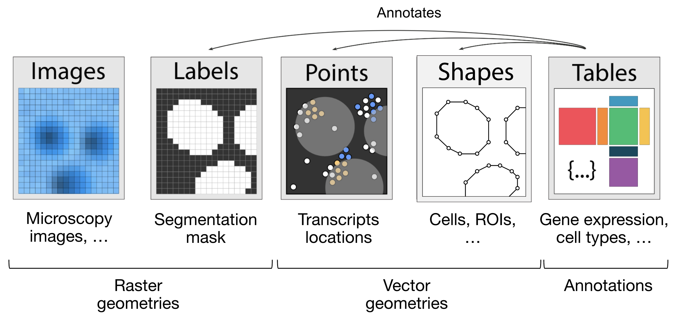
Fig. 5.5 The elements of a SpacialData object. Obtained from .#
import spatialdata as sd
import spatialdata_plot # noqa: F401
Let’s load a mouse liver dataset using lamindb. The original dataset is available here.
sdata = ln.Artifact.get(
key="introduction/advanced_data_structures_and_frameworks_spatialdata.zarr"
).load()
sdata
SpatialData object, with associated Zarr store: /Users/luisheinzlmeier/Library/Caches/lamindb/lamin-eu-central-1/VPwcjx3CDAa2/introduction/advanced_data_structures_and_frameworks_spatialdata.zarr
├── Images
│ └── 'raw_image': DataTree[cyx] (1, 6432, 6432), (1, 1608, 1608)
├── Labels
│ └── 'segmentation_mask': DataArray[yx] (6432, 6432)
├── Points
│ └── 'transcripts': DataFrame with shape: (<Delayed>, 3) (2D points)
├── Shapes
│ └── 'nucleus_boundaries': GeoDataFrame shape: (3375, 1) (2D shapes)
└── Tables
└── 'table': AnnData (3375, 99)
with coordinate systems:
▸ 'global', with elements:
raw_image (Images), segmentation_mask (Labels), transcripts (Points), nucleus_boundaries (Shapes)
5.3.3. Explore the Elements of the SpatialData object#
Let’s explore each element type and how they are represented:
Images:
xarray.DataArrayorxarray.DataTreeobjects respectively for single-scale or multi-scale imagesLabels:
xarray.DataArrayorxarray.DataTreeobjects containing integer codes for different labelsPoints:
dask.DataFrameobjects containing point coordinates, (lazy version ofpandas.DataFrameobjects)Shapes:
geopandas.GeoDataFrameobjects containing geometric objects like polygonsTables:
anndata.AnnDataobjects for tabular data with annotations
sdata["raw_image"]
Images can have multiple scales, which are stored in a pyramid for downsampled representations useful for more efficient visualization and analysis.
We can access a single scale using the get_pyramid_levels function, where 0 is the highest resolution, 1 is downsampled by a factor of (usually 2), 2 is downsampled by another factor (usually 2, with respect to the previous scale), etc.
In this case, our image has 2 scales (check out groups of the output from the code cell above). Let’s access the highest resolution image.
sd.get_pyramid_levels(sdata["raw_image"], n=1)
To view image properties such as axes and channel names, SpatialData provides some helper functions.
More helper functions can be found in the API page.
The axes x and y represent the two-dimensional plane of the image, while c corresponds to the different channels (e.g., wavelength) within the image.
sd.models.get_axes_names(sdata["raw_image"])
('c', 'y', 'x')
Here we see that our image only has one channel for DAPI staining (highlights nucleus).
sd.models.get_channel_names(sdata["raw_image"])
[0]
Let’s use spatialdata-plot to show the image (DAPI staining for nuclei).
sdata.pl.render_images("raw_image", cmap="gray").pl.show()
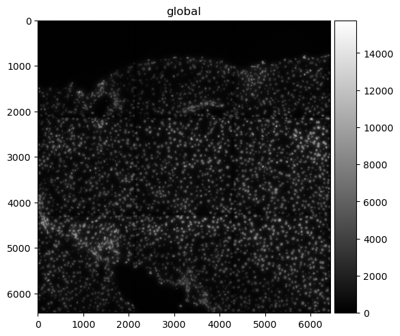
5.3.4. Points#
Points are represented as dask.DataFrame objects containing point coordinates (lazy version of pandas.DataFrame objects).
Lazy-loading the DataFrame reduces memory usage, as the information is only retrieved from the data file when it is needed and not all at once.
For spatial transcriptomics datasets measuring single-molecules, coordinates are stored in columns x and y (optionally z for 3D) and have an additional column annotating gene identity.
sdata["transcripts"]
| x | y | gene | |
|---|---|---|---|
| npartitions=1 | |||
| float64 | float64 | category[unknown] | |
| ... | ... | ... |
We can easily convert the dask.DataFrame to a pandas.DataFrame using .compute() so it is easier to work with.
Note that this will load the entire object into memory.
If the data is large you can use directly the dask APIs for the manipulation of the dataframe.
sdata["transcripts"].compute()
| x | y | gene | |
|---|---|---|---|
| 0 | 433.0 | 1217.0 | Adgre1 |
| 1 | 151.0 | 1841.0 | Adgre1 |
| 2 | 139.0 | 1983.0 | Adgre1 |
| 3 | 1349.0 | 1601.0 | Adgre1 |
| 4 | 784.0 | 1732.0 | Adgre1 |
| ... | ... | ... | ... |
| 1998863 | 5743.0 | 5233.0 | Lyve1 |
| 1998864 | 5721.0 | 4581.0 | Lyve1 |
| 1998865 | 5807.0 | 4842.0 | Lyve1 |
| 1998866 | 5843.0 | 5309.0 | Lyve1 |
| 1998869 | 5580.0 | 5226.0 | Lyve1 |
1153548 rows × 3 columns
When visualizing the points, note that plotting backend automatically switches from matplotlib to datashader.
This ensures performant rendering when the number of points is large.
As you can see below, it will be more useful to plot subsets of transcripts, such as specific genes.
We further plot the transcripts colored by gene.
The groups argument can be used to plot transcripts for a subset of genes.
sdata.pl.render_points("transcripts").pl.show()
sdata.pl.render_points(
"transcripts", color="gene", groups="Vwf", palette="red", table_name="table"
).pl.show()
INFO Using 'datashader' backend with 'None' as reduction method to speed up plotting. Depending on the
reduction method, the value range of the plot might change. Set method to 'matplotlib' do disable this
behaviour.
WARNING No table name provided, using 'table' as fallback for color mapping.


5.3.5. Shapes#
Shapes are represented as geopandas.GeoDataFrame objects containing geometric objects like polygons.
For a comprehensive guide on working with geopandas.GeoDataFrame objects, please refer to the geopandas documentation.
sdata["nucleus_boundaries"]
| geometry | |
|---|---|
| cell_ID | |
| 99 | POLYGON ((6277 798, 6277 799, 6272 799, 6272 8... |
| 142 | POLYGON ((6427 6123, 6423 6123, 6423 6124, 641... |
| 208 | POLYGON ((3747 858, 3747 859, 3746 859, 3746 8... |
| 235 | POLYGON ((752 6144, 752 6145, 763 6145, 763 61... |
| 336 | POLYGON ((5174 935, 5174 936, 5172 936, 5172 9... |
| ... | ... |
| 7652 | POLYGON ((1094 6028, 1094 6029, 1091 6029, 109... |
| 7680 | POLYGON ((1324 6063, 1324 6064, 1320 6064, 132... |
| 7694 | POLYGON ((1692 6063, 1692 6064, 1686 6064, 168... |
| 7708 | POLYGON ((768 6072, 768 6073, 765 6073, 765 60... |
| 7723 | POLYGON ((374 6074, 374 6076, 373 6076, 373 60... |
3375 rows × 1 columns
sdata.pl.render_shapes("nucleus_boundaries").pl.show()
INFO Converted 1 Polygon(s) with holes to MultiPolygon(s) for correct rendering.
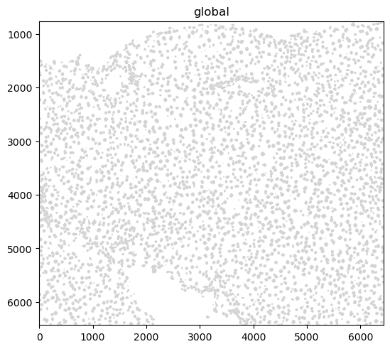
5.3.6. Tables#
Annotated matrices are represented as anndata.AnnData objects.
Ingested datasets will usually have a table located at sdata['table'] for a count/abundance matrix.
This enables downstream analysis with tools like Scanpy, scVI, etc.
For different spatial technologies this quantifies:
transcriptomics: transcript counts;
spatial proteomics: marker abundances;
slide-based assays: spot/grid abundances (see spatial chapter).
sdata["table"]
Here is an example of plotting numerical information on the cells (HAL gene expression) and of plotting categorical information (cell types).
sdata.pl.render_shapes("nucleus_boundaries", color="Hal").pl.show()
sdata.pl.render_shapes("nucleus_boundaries", color="annotation").pl.show()
INFO Converted 1 Polygon(s) with holes to MultiPolygon(s) for correct rendering.
INFO Successfully extracted 10 colors from 'annotation_colors' in table 'table'.
INFO Converted 1 Polygon(s) with holes to MultiPolygon(s) for correct rendering.

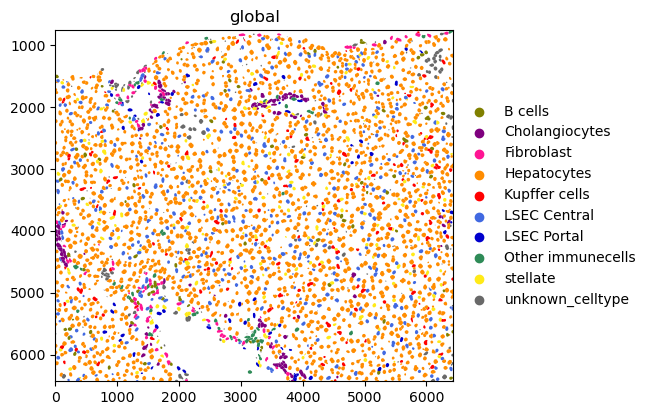
5.4. Spacial omics data analysis with Squidpy#
Squidpy is a framework to analyze and visualize spatial omics data. It was published around two years before SpatialData [Marconato et al., 2025, Palla et al., 2022]. This is also why Squidpy was originally builts on top of Scanpy and AnnData. As the scverse ecosystem will gradually transition Squidpy to use SpatialData internally, this only gives a short introduction on how Squidpy uses spatial data. Check out future changes and tutorials on the documentation of SpatialData and Squidpy.
5.4.1. API overview#
Squidpy’s API lets you analyze and visualize spatial molecular data.
Graph (gr) handles spatial relationships and interactions, image (im) processes and segments tissue images, tools (tl) provides spatial analysis, and plotting (pl) visualizes data and results.
Reading (read) and datasets (datasets) support importing data and example datasets across technologies.
5.4.2. Installation and importing packages#
Squidpy is available on PyPI and Conda. It can be installed using either of the following commands.
pip install squidpy
conda install -c conda-forge squidpy
5.4.3. SpacialData integration#
Let`s start by importing Squidpy.
import squidpy as sq
We can load a Xenium dataset with lamindb.
sdata = ln.Artifact.get(
key="introduction/advanced_data_structures_and_frameworks_squidpy.zarr"
).load()
sdata
SpatialData object, with associated Zarr store: /Users/luisheinzlmeier/Library/Caches/lamindb/lamin-eu-central-1/VPwcjx3CDAa2/introduction/advanced_data_structures_and_frameworks_squidpy.zarr
├── Images
│ ├── 'morphology_focus': DataTree[cyx] (1, 25778, 35416), (1, 12889, 17708), (1, 6444, 8854), (1, 3222, 4427), (1, 1611, 2213)
│ └── 'morphology_mip': DataTree[cyx] (1, 25778, 35416), (1, 12889, 17708), (1, 6444, 8854), (1, 3222, 4427), (1, 1611, 2213)
├── Points
│ └── 'transcripts': DataFrame with shape: (<Delayed>, 8) (3D points)
├── Shapes
│ ├── 'cell_boundaries': GeoDataFrame shape: (167780, 1) (2D shapes)
│ └── 'cell_circles': GeoDataFrame shape: (167780, 2) (2D shapes)
└── Tables
└── 'table': AnnData (167780, 313)
with coordinate systems:
▸ 'global', with elements:
morphology_focus (Images), morphology_mip (Images), transcripts (Points), cell_boundaries (Shapes), cell_circles (Shapes)
5.4.4. Squidpy demo#
Let’s compute a nearest neighbor graph of the spatial coordiantes of the xenium dataset.
sq.gr.spatial_neighbors(sdata["table"])
After that, we can cluster the cells based on gene expression profiles and compute clustering.
%%time
sc.pp.pca(sdata["table"])
sc.pp.neighbors(sdata["table"])
sc.tl.leiden(sdata["table"])
CPU times: user 2min 6s, sys: 3.94 s, total: 2min 10s
Wall time: 2min 10s
And run the neighbor enrichment analysis in Squidpy.
sq.gr.nhood_enrichment(sdata["table"], cluster_key="leiden")
sq.pl.nhood_enrichment(sdata["table"], cluster_key="leiden", figsize=(5, 5))
100%|██████████| 1000/1000 [00:44<00:00, 22.28/s]
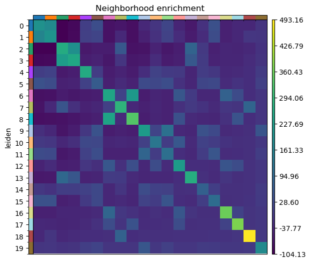
We can finally visualize the results in spatial coordinates both with Squidpy as well as with the novel plotting function in SpatialData.
%%time
sq.pl.spatial_scatter(sdata["table"], shape=None, color="leiden")
WARNING: Please specify a valid `library_id` or set it permanently in `adata.uns['spatial']`
CPU times: user 112 ms, sys: 6.02 ms, total: 118 ms
Wall time: 117 ms
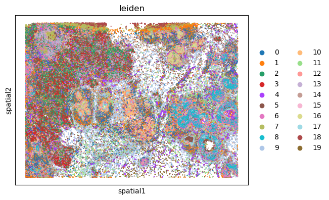
5.5. Questions#
5.5.1. Flipcards#
5.5.2. Multiple-choice questions#
How would you access RNA data in a MuData object `mdata`?
In a SpatialData object, where are the X/Y coordinates of a table (AnnData object) stored?
SpatialData differs from AnnData because it:
5.6. References#
Danila Bredikhin, Ilia Kats, and Oliver Stegle. Muon: multimodal omics analysis framework. Genome Biology, 23(1):42, Feb 2022. URL: https://doi.org/10.1186/s13059-021-02577-8, doi:10.1186/s13059-021-02577-8.
Luca Marconato, Giovanni Palla, Kevin A. Yamauchi, Isaac Virshup, Elyas Heidari, Tim Treis, Wouter-Michiel Vierdag, Marcella Toth, Sonja Stockhaus, Rahul B. Shrestha, Benjamin Rombaut, Lotte Pollaris, Laurens Lehner, Harald Vöhringer, Ilia Kats, Yvan Saeys, Sinem K. Saka, Wolfgang Huber, Moritz Gerstung, Josh Moore, Fabian J. Theis, and Oliver Stegle. Spatialdata: an open and universal data framework for spatial omics. Nature Methods, 22(1):58–62, 2025. URL: https://doi.org/10.1038/s41592-024-02212-x, doi:10.1038/s41592-024-02212-x.
Giovanni Palla, Hannah Spitzer, Michal Klein, David Fischer, Anna Christina Schaar, Louis Benedikt Kuemmerle, Sergei Rybakov, Ignacio L. Ibarra, Olle Holmberg, Isaac Virshup, Mohammad Lotfollahi, Sabrina Richter, and Fabian J. Theis. Squidpy: a scalable framework for spatial omics analysis. Nature Methods, 19(2):171–178, Feb 2022. URL: https://doi.org/10.1038/s41592-021-01358-2, doi:10.1038/s41592-021-01358-2.
Isaac Virshup, Sergei Rybakov, Fabian J. Theis, Philipp Angerer, and F. Alexander Wolf. Anndata: annotated data. bioRxiv, 2021. URL: https://www.biorxiv.org/content/early/2021/12/19/2021.12.16.473007, arXiv:https://www.biorxiv.org/content/early/2021/12/19/2021.12.16.473007.full.pdf, doi:10.1101/2021.12.16.473007.
F. Alexander Wolf, Philipp Angerer, and Fabian J. Theis. Scanpy: large-scale single-cell gene expression data analysis. Genome Biology, 19(1):15, Feb 2018. URL: https://doi.org/10.1186/s13059-017-1382-0, doi:10.1186/s13059-017-1382-0.
5.7. Contributors#
We gratefully acknowledge the contributions of:
5.7.2. Reviewers#
Isaac Virshup